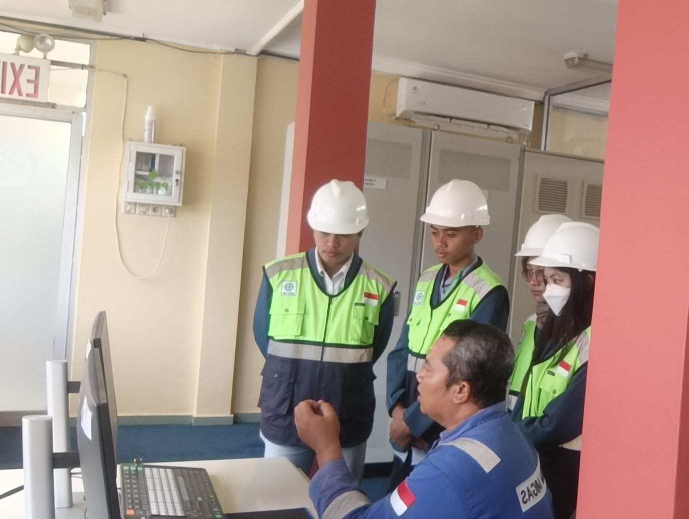
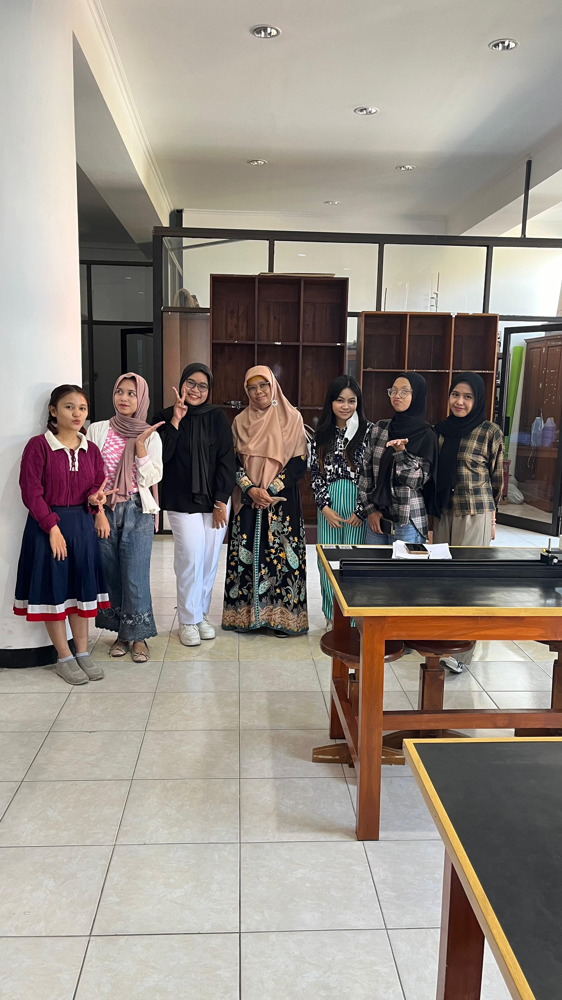
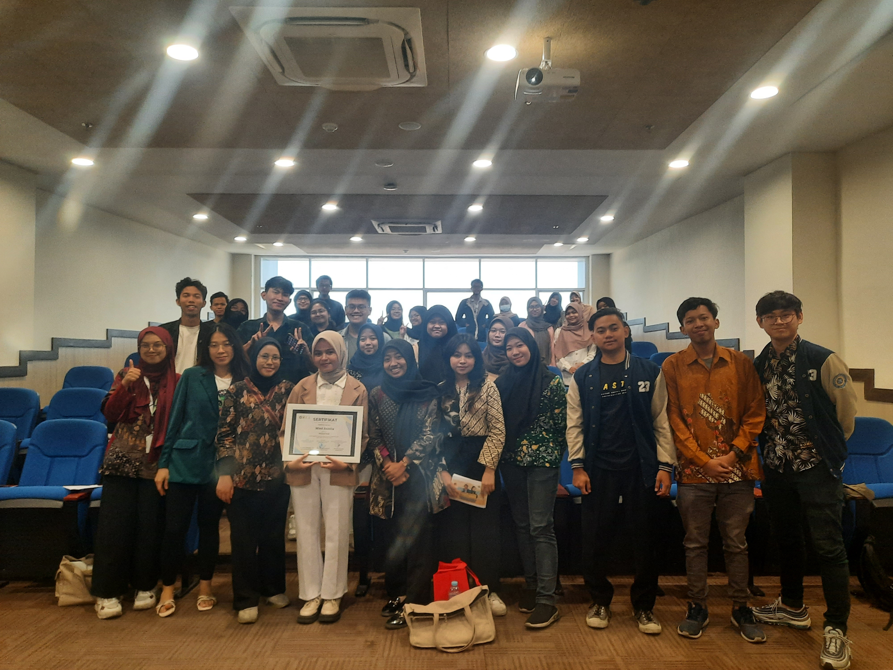
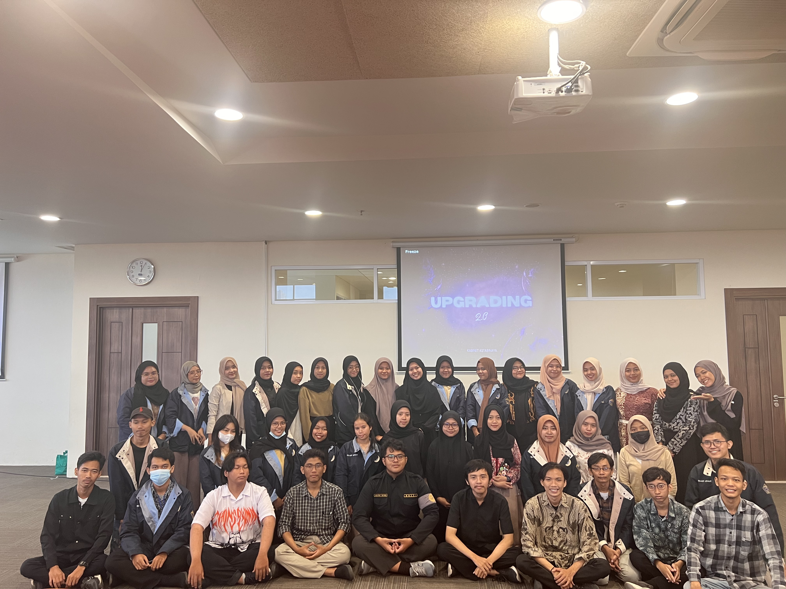
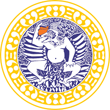

Hello, I'm
Robiatul Isnaini
Computational Physics Graduate
Aspiring AI Engineer & Web Developer with an interest in Artificial Intelligence, Machine Learning, Computer Vision, and Web Development.

Hello, I'm
Aspiring AI Engineer & Web Developer with an interest in Artificial Intelligence, Machine Learning, Computer Vision, and Web Development.
I'm a Physics graduate from Universitas Airlangga with a strong interest in Artificial Intelligence, Machine Learning, Computer Vision, and Web Development. I have over a year of hands-on experience developing AI projects using Python, YOLOv8, and OpenCV, along with experience building responsive websites using HTML, CSS, and JavaScript. My thesis focused on implementing YOLOv8 for rock-type detection from video, covering dataset preparation, model training, and evaluation. I’m passionate about building practical digital solutions and continuously growing as an AI Engineer and Web Developer.
Python

Html

Css

JavaScript

Colab

Excel

Github

Jupyter
Kaggle
Roboflow
Visual Studio
Here are some of the projects I have worked on.

A real-time object detection system developed using YOLOv8 to identify three rock types: Diorite, Marble, and Coal from video.
Python · YOLOv8 · OpenCV · Roboflow · Deep Learning · Object Deetection
View on GitHub
Built a responsive website from scratch using HTML, CSS, and JavaScript, demonstrating skills in front-end development, responsive design, and UI implementation.
HTML5 · CSS3 · JavaScript · Responsive Web Design · Front-End Development · UI Implementation · Web Layout & Navigation
View on GitHub
A classification system that uses environmental factors such as temperature, water pH, and season to recommend hydroponic suitability.
Python · Random Forest · Scikit-learn · Tkinter · Machine Learning
View on GitHub
An object detection project developed using YOLOv5 to identify potholes from road images.
Python · YOLOv5 · Roboflow · Object Detection · Annotation
View on GitHub
PPSDM MIGAS Cepu
Observed Water Treatment Plant (WTP) operations, documented technical field activities, and collaborated with technical personnel in an oil and gas industrial environment.

Department of Physics
Mentored 30 undergraduate students in laboratory experiments, data analysis, equipment operation, and problem-solving across 3 modules and 14 practical sessions.

Universitas Airlangga
Coordinated student programs and cross-university collaborations, managing communication, official correspondence, documentation, and program administration while achieving 100% attendance.

Universitas Airlangga
Planned and coordinated student programs, led the KSK Division, and supported effective teamwork and smooth program execution.

Fresh Graduate
Bachelor of Science in Physics | Computational Physics
GPA: 3.30/4.00
Aug 2022 - Jul 2026
Feel free to connect with me through GitHub or LinkedIn.